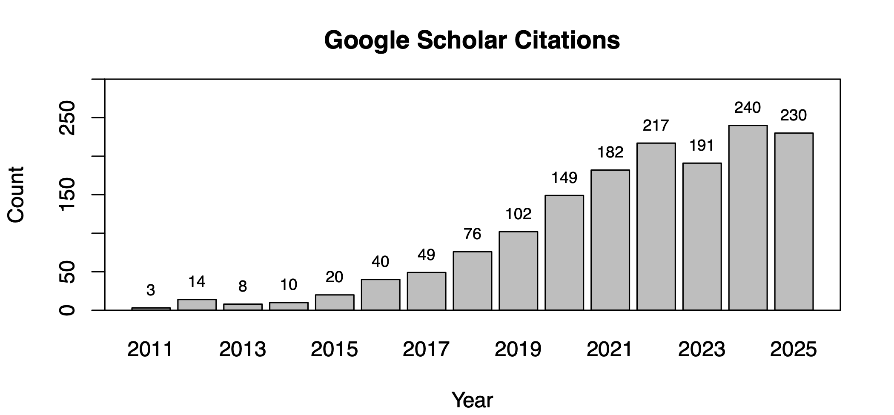

Publications
Publications Impact

Peer Reviewed Papers
- Helwig, N. E., Chen K., Guy S. J., & Lyford-Pike S. (2026) Regularized multilevel multinomial regression for select-all-that-apply responses and high-dimensional predictors with applications to perception of facial expressions. Psychometrika, doi: 10.1017/psy.2026.10102
- Helwig, N. E., Berry, L. N., Hadlock, T. A., Guy, S. J., & Lyford-Pike, S. (2025). Dynamic facial health predicts psychological first impressions with applications to tailored treatments for facial paralysis. Journal of Personalized Medicine, 15(11), 530. doi: 10.3390/jpm15110530
- Delgado, J. E., Elison, J. T., & Helwig, N. E. (2025). Robust detection of signed outliers in multivariate data with applications to early identification of risk for autism. Psychological Methods. Advance online publication. doi: 10.1037/met0000775
- Helwig, N. E. (2025). Versatile descent algorithms for group regularization and variable selection in generalized linear models. Journal of Computational and Graphical Statistics, 34(1), 239-252. doi: 10.1080/10618600.2024.2362232
- Duffy, K. A., & Helwig, N. E. (2024). Resting-state functional connectivity predicts attention problems in children: evidence from the ABCD Study. NeuroSci, 5(4), 445-461. doi: 10.3390/neurosci5040033
- Ehrmantraut, L. E., Redden, J. P., Mann, T., Helwig, N. E., & Vickers, Z. M. (2024). Self-selected diets: Exploring the factors driving food choices and satisfaction with dietary variety among independent adults. Food Quality and Preference, 105154. doi: 10.1016/j.foodqual.2024.105154
- Helwig, N. E. (2024). Precise tensor product smoothing via spectral splines. Stats, 7(1), 34-53. doi: 10.3390/stats7010003
- Helwig, N. E. (2022). Robust permutation tests for penalized splines. Stats, 5(3), 916-933. doi: 10.3390/stats5030053
- Helwig, N. E. (2022). Computing the real solutions of Fleishman's equations for simulating non-normal data. British Journal of Mathematical and Statistical Psychology, 75(2), 319-333. doi: 10.1111/bmsp.12259
- Kage, C. C., Helwig, N. E., & Ellingson, A. M. (2021). Normative cervical spine kinematics of a circumduction task. Journal of Electromyography and Kinesiology, 61, 102591. doi: 10.1016/j.jelekin.2021.102591
- Berry, L. N., & Helwig, N. E. (2021). Cross-validation, information theory, or maximum likelihood? A comparison of tuning methods for penalized splines. Stats, 4(3), 701-724. doi: 10.3390/stats4030042
- Doyle, C. M., Lasch, C., Vollman, E. P., Desjardins, C. D., Helwig, N. E., Jacob, S., Wolff, J. J., & Elison, J. T. (2021). Phenoscreening: a developmental approach to research domain criteria-motivated sampling. The Journal of Child Psychology and Psychiatry, 62(7), 884-894. doi: 10.1111/jcpp.13341
- Helwig, N. E. (2021). Spectrally sparse nonparametric regression via elastic net regularized smoothers. Journal of Computational and Graphical Statistics, 30(1), 182-191. doi: 10.1080/10618600.2020.1806855
- Kage, C. C., Akbari-Shandiz, M., Foltz, M. H., Lawrence, R. L., Brandon, T. L., Helwig, N. E., & Ellingson, A. M. (2020). Validation of an automated shape-matching algorithm for biplane radiographic spine osteokinematics and radiostereometric analysis error quantification. PLoS ONE, 15(2), e0228594. doi: 10.1371/journal.pone.0228594
- Almquist, Z. W., Helwig, N. E., & You, Y. (2020). Connecting Continuum of Care point-in-time homeless counts to United States Census areal units. Mathematical Population Studies, 27(1), 46-58. doi: 10.1080/08898480.2019.1636574
- Helwig, N. E. (2020). Multiple and generalized nonparametric regression. In P. Atkinson, S. Delamont, A. Cernat, J. W. Sakshaug, & R. A. Williams (Eds.), SAGE Research Methods Foundations. doi: 10.4135/9781526421036885885
- Hammell, A. E., Helwig, N. E., Kaczkurkin, A. N., Sponheim, S. R., & Lissek, S. (2020). The temporal course of over-generalized conditioned threat expectancies in posttraumatic stress disorder. Behaviour Research and Therapy, 124, 103513. doi: 10.1016/j.brat.2019.103513
- Helwig, N. E. (2019). Robust nonparametric tests of general linear model coefficients: A comparison of permutation methods and test statistics. NeuroImage, 201, 116030. doi: 10.1016/j.neuroimage.2019.116030
- Helwig, N. E., & Snodgress, M. A. (2019). Exploring individual and group differences in latent brain networks using cross-validated simultaneous component analysis. NeuroImage, 201, 116019. doi: 10.1016/j.neuroimage.2019.116019
- Helwig, N. E. (2019). Statistical nonparametric mapping: Multivariate permutation tests for location, correlation, and regression problems in neuroimaging. WIREs Computational Statistics, 11(2), e1457. doi: 10.1002/wics.1457
- Whiteford, K. L., Schloss, K. B., Helwig, N. E., & Palmer, S. E. (2018). Color, music, and emotion: Bach to the blues. i-Perception, 9(5), 1-25. doi: 10.1177/2041669518808535
- Lyford-Pike, S., Helwig, N. E., Sohre, N. E., Guy, S. J., & Hadlock, T. A. (2018). Predicting perceived disfigurement from facial function in patients with unilateral paralysis. Plastic and Reconstructive Surgery, 142(5), 722e-728e. doi: 10.1097/PRS.0000000000004851
- Liew, B. X. W., Helwig, N. E., Morris, S., & Netto, K. (2018). Influence of proximal trunk borne load on lower limb countermovement joint dynamics. Journal of Biomechanics, 79(5), 223-226. doi: 10.1016/j.jbiomech.2018.08.009
- Lawrence, R., Sessions, W. C., Jensen, M. C., Staker, J. L., Eid, A., Breighner, R., Helwig, N. E., Braman, J. P., & Ludewig, P. M. (2018). The effect of glenohumeral plane of elevation on supraspinatus subacromial proximity. Journal of Biomechanics, 79(5), 147-154. doi: 10.1016/j.jbiomech.2018.08.005
- Sohre, N. E., Adeagbo, M., Helwig, N. E., Lyford-Pike, S., & Guy, S. J. (2018). PVL: A framework for navigating the precision-variety trade-off in automated animation of smiles. Proceedings of the AAAI Conference on Artificial Intelligence, 32(1). doi: 10.1609/aaai.v32i1.11431
- Helwig, N. E., & Ruprecht, M. R. (2017). Age, gender, and self-esteem: a sociocultural look through a nonparametric lens. Archives of Scientific Psychology, 5(1), 19-31. doi: 10.1037/arc0000032
- Helwig, N. E. (2017). Regression with ordered predictors via ordinal smoothing splines. Frontiers in Applied Mathematics and Statistics, 3(15), 1-13. doi: 10.3389/fams.2017.00015
- Helwig, N. E. (2017). Estimating latent trends in multivariate longitudinal data via Parafac2 with functional and structural constraints. Biometrical Journal, 59(4), 783-803. doi: 10.1002/bimj.201600045
- Helwig, N. E., Sohre, N. E., Ruprecht, M. R., Guy, S. J., & Lyford-Pike, S. (2017). Dynamic properties of successful smiles. PLoS ONE, 12(6): e0179708. doi: 10.1371/journal.pone.0179708
- Helwig, N. E. (2017). Adding bias to reduce variance in psychological results: A tutorial on penalized regression. The Quantitative Methods for Psychology, 13(1), 1-19. doi: 10.20982/tqmp.13.1.p001
- Helwig, N. E., Shorter, K. A., Ma, P. & Hsiao-Wecksler, E. T. (2016). Smoothing spline analysis of variance models: A new tool for the analysis of cyclic biomechanical data. Journal of Biomechanics, 49(14), 3216-3222. doi: 10.1016/j.jbiomech.2016.07.035
- Helwig, N. E., & Ma, P. (2016). Smoothing spline ANOVA for super-large samples: Scalable computation via rounding parameters. Statistics and Its Interface, 9(4), 433-444. doi: 10.4310/SII.2016.v9.n4.a3
- Helwig, N. E. (2016). Efficient estimation of variance components in nonparametric mixed-effects models with large samples. Statistics and Computing, 26(6), 1319-1336. doi: 10.1007/s11222-015-9610-5
- Engel, S. A., Wilkins, A. J., Mand, S., Helwig, N. E., & Allen, P. M. (2016). Habitual wearers of colored lenses adapt more rapidly to the color changes the lenses produce. Vision Research, 125, 41-48. doi: 10.1016/j.visres.2016.05.003
- Abram, S. V., Helwig, N. E., Moodie, C. A., DeYoung, C. G., MacDonald, A. W. III, & Waller, N. G. (2016). Bootstrap enhanced penalized regression for variable selection with neuroimaging data. Frontiers in Neuroscience, 10(344), 1-15. doi: 10.3389/fnins.2016.00344
- Helwig, N. E., Gao, Y., Wang, S., & Ma, P. (2015). Analyzing spatiotemporal trends in social media data via smoothing spline analysis of variance. Spatial Statistics, 14(C), 491-504. doi: 10.1016/j.spasta.2015.09.002
- Helwig, N. E., & Ma, P. (2015). Fast and stable multiple smoothing parameter selection in smoothing spline analysis of variance models with large samples. Journal of Computational and Graphical Statistics, 24(3), 715-732. doi: 10.1080/10618600.2014.926819
- Helwig, N. E. (2013). The special sign indeterminacy of the direct-fitting Parafac2 model: Some implications, cautions, and recommendations for Simultaneous Component Analysis. Psychometrika, 78(4), 725-739. doi: 10.1007/S11336-013-9331-7
- Helwig, N. E., & Hong, S. (2013). A critique of Tensor Probabilistic Independent Component Analysis: Implications and recommendations for multi-subject fMRI data analysis. Journal of Neuroscience Methods, 213(2), 263-273. doi: 10.1016/j.jneumeth.2012.12.009
- Helwig, N. E., Hong, S., & Bokhari, E. (2013). Analyzing individual and group differences in multijoint multiwaveform gait data using the Parafac2 model. International Journal for Numerical Methods in Biomedical Engineering, 29(1), 62-82. doi: 10.1002/cnm.2492
- Helwig, N. E., Hong, S., & Polk, J. D. (2012). Parallel Factor Analysis of gait waveform data: A multimode extension of Principal Component Analysis. Human Movement Science, 31(3), 630-648. doi: 10.1016/j.humov.2011.06.011
- Helwig, N. E., Hong, S., Hsiao-Wecksler E. T., & Polk, J. D. (2011). Methods to temporally align gait cycle data. Journal of Biomechanics, 44(3), 561-566. doi: 10.1016/j.jbiomech.2010.09.015
Book Reviews and Conference Abstracts
- Malone, S., Helwig, N. E., Harper, J., & Iacono, W. (2018). Substance-abuse risk among adolescents is associated with increased impulsive errors and decreased theta power in a multiway analysis of NoGo EEG activity. Psychophysiology, 55(S1), S123. doi: 10.1111/psyp.13264
- Kage, C. C., Helwig, N. E., Hyatt, B., Blaisdell, J., Mabamba, K., Nguyen, L., Eitel, Z., Foltz, M. A., & Ellingson, A. M. (2018). Normative cervical spine kinematics of a circumduction task in a healthy cohort. Annual Meeting of American Society of Biomechanics. Link: ASB2018/354
- Mervis, J., Helwig, N. E., Meyer-Kalos, P., & MacDonald, A. (2017). The mismeasurement of psychosis: Parsing differences in discriminating power across symptom dimensions. Schizophrenia Bulletin, 43(suppl_1), M111. doi: 10.1093/schbul/sbx022.106
- Helwig, N. E. (2016). Smoothing spline ANOVA models for analyzing event-related potential data. Psychophysiology, 53(S1), S79. doi: 10.1111/psyp.12719
- Helwig, N. E., & Anderson, C. J. (2014). Review of Handbook of Advanced Multilevel Analysis by J. J. Hox & J. K. Roberts (Eds.). Psychometrika, 79(1), 175-177. doi: 10.1007/S11336-013-9351-3
- Helwig, N. E., Hong, S., Polk, J. D., & Lague, M. R. (2010). Analysis of gait cycle shapes using Parallel Factor Analysis. Annual Meeting of American Society of Biomechanics. Link: ASB2010/145
- Helwig, N. E., Hong, S., & Hsiao-Wecksler, E. T. (2009). Time-normalization techniques for gait data. Annual Meeting of American Society of Biomechanics. Link: ASB2009/979
- Helwig, N. E., Hong, S., & Hsiao-Wecksler, E. T. (2009). Partitioning gait data into temporal and intensity differences. Annual Meeting of American Society of Biomechanics. Link: ASB2009/978